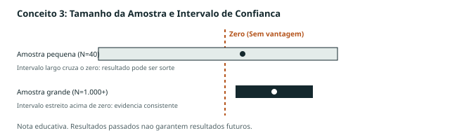

Licao 2 (Nivel 2): Porque 50 Trades Positivos Nao Chegam
Aviso: Conteudo educativo baseado em estatistica e backtests. Nao constitui recomendacao de investimento.
1. O problema das amostras pequenas
Uma moeda equilibrada pode sair cara 7 vezes em 10 lancamentos por puro acaso. No trading acontece o mesmo: uma estrategia sem vantagem pode ter 30 ou 50 trades positivos seguidos de meses de perdas.

2. Exemplo real do nosso catalogo (D1 vs H1)
- EMA 20/50 em Cripto D1: Em mais de dois anos de treino gerou apenas 84 trades nos 5 ativos — abaixo do minimo de 100 trades para tirar qualquer conclusao.
- Donchian em Cripto H1: Gerou 6.167 trades, mas o excesso de entradas fez com que as comissoes e o ruido levassem o saldo liquido para -12.347,7 $.
- Donchian em Cripto D1: Gerou 271 trades com saldo positivo mesmo sem os 2 maiores ganhos (+391,4 $), mas ainda sem ultrapassar o ajuste estatistico para 30 testes simultaneos.
3. Mini-Quiz de Compreensao
- Pergunta 1: Porque exigimos pelo menos 100 trades antes de avaliar uma estrategia? (Abaixo de 100 trades a margem de erro e demasiado larga para separar habilidade de sorte).
- Pergunta 2: Se testarmos 30 combinacoes diferentes de indicadores, porque ajustamos o rigor estatistico (Bonferroni)? (Quanto mais testes fazemos, maior a probabilidade de encontrar um vencedor falso apenas por acaso).